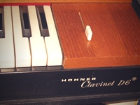

| Photo |
Description |
Price |
 |
The Rhodes piano is an electro-mechanical piano, invented by Harold Rhodes during
the fifties and later manufactured in a number of models, first in collaboration with Fender and
after 1965 by CBS. It employs a piano-like keyboard with hammers that hit small metal tines, amplified by
electromagnetic pickups.
|
$1400 |
 |
The Wurlitzer electric piano is an electo-mechanical piano, create by the Rudolph Wurlitzer Company
of Mississippi. The Wurlitzer company itself never called the instrument an "electric piano", instead inventing
the phrase "Electronic Piano" and using this as a trademark throughout the production of the instrument. It employs
a piano-like keyboard with hammers that hit small metal tines, amplified by electromagnetic pickups.
|
$1600 |
|  |
A clavinet is an electronically amplified clavichord manufactured by the Hohner company.
Each key uses a rubber top to perform a hammer on a string. Its distinctive bright staccato sound is often comapred
to that of an electric guitar. Varuious models were producer over the years, including the models, I, II, L, C, D6 and E7
|
$1200 |